A Very Normal Amount of Love for Animals
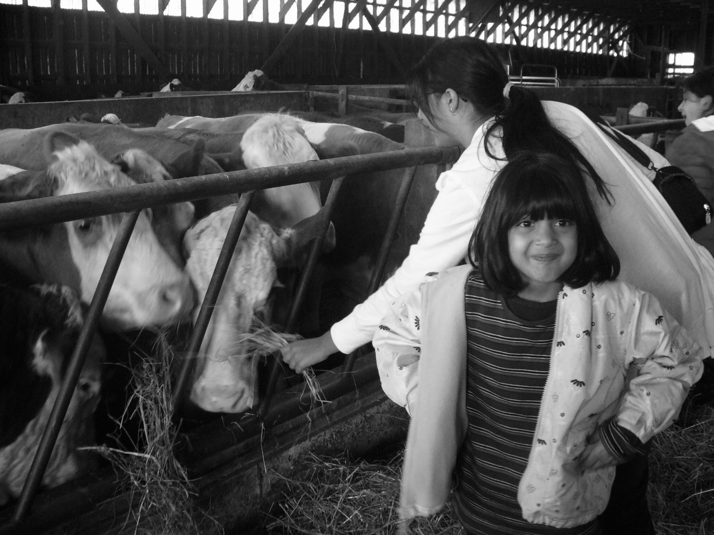
| Section | What you’ll find |
|---|---|
| About Me | A short introduction to who I am and why animals mean so much to me. |
| Memories | Some of my favourite childhood memories and stories connected to animals. |
| My Kids | Meet my seven cats and one dog, each with their own little personality. |
| Contact | A way to get in touch with me by email. |
If you’ve ever heard the term “crazy cat lady,” that’s pretty much me, and then some. For as long as I can remember, animals have always been a huge part of my life.
I grew up on a farm surrounded by goats, chickens, a llama, and more dogs and cats than I could ever keep count of. Even after moving, that love never faded. If anything, it only grew stronger, along with the number of pets and the feeling of always being surrounded by so much love, comfort, and wonder.
This page is my small way of sharing a little piece of the love, admiration, and slight obsession I’ve always had for all my babies.
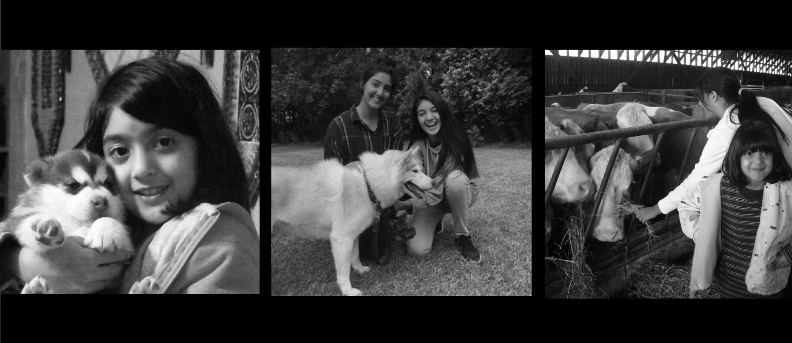
Some of my favourite memories are the really small ones, like trying to pet every cat I saw, getting way too excited over baby animals, and always paying more attention to the animals than anything else around me.
I was definitely the kind of kid who could stay entertained just watching them for hours.
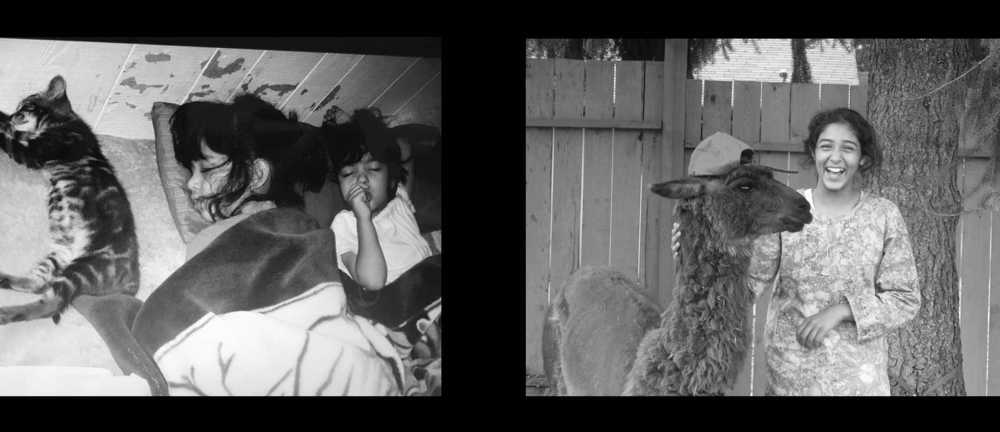
One of the memories that stands out most from growing up in Vancouver was seeing bears roam behind our house and around the farm, usually stopping to pick berries. It was such a surreal but normal part of life there, and it made my childhood memories with animals feel even more special.
Moments like that gave me an early fascination with wildlife, especially black and brown bears, and made me appreciate just how amazing it was to grow up so close to nature.
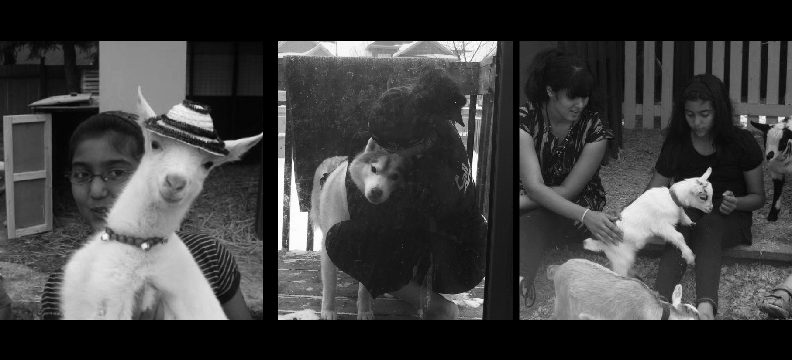
This section is about my current crew, seven cats and one dog, and the ones who colour my life now.
Milo was our first cat after many years, and as a little Covid baby, he quickly became my sunshine sunflower. I have the closest bond with that orange chunk, and he definitely carries himself like he runs the whole crew.
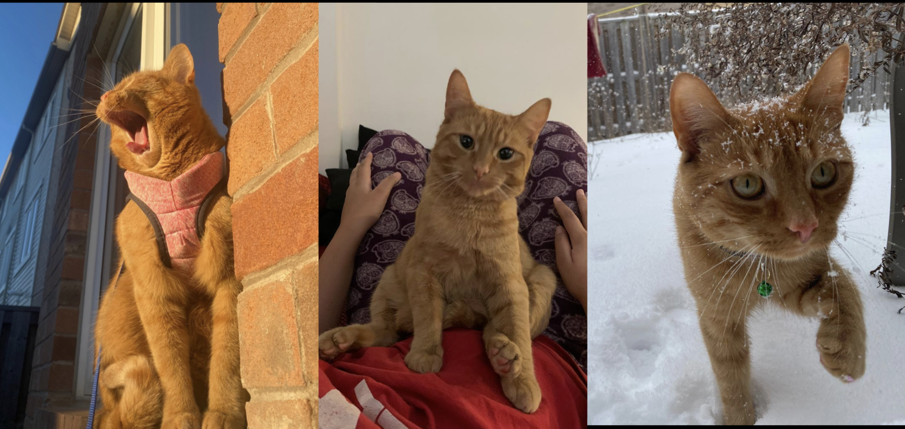
Tommy was the stray who came into our family after a vacation. He’s the sweetest, most social boy who loves attention and will plop onto the floor anywhere the moment someone starts petting him. He’s also a little hunter at heart and loves bringing home mice or birds for the family.
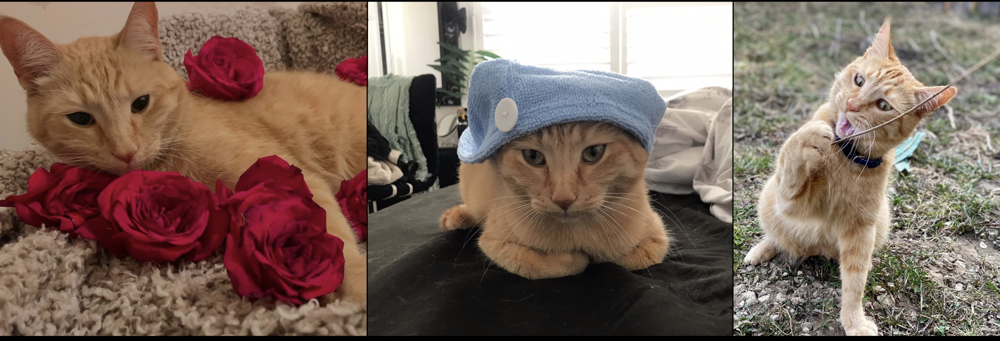
Patodi was also a Covid baby. My sister got him from a friend, and we originally thought he was a girl, so we named him Lilia. Later on, we found out he was actually a boy, and his name became Patodi. As he grew up, he turned into the sweetest, most anxious little boy. Over time, even his looks changed, his fur went from white to brown, and now he honestly looks like a completely different cat.
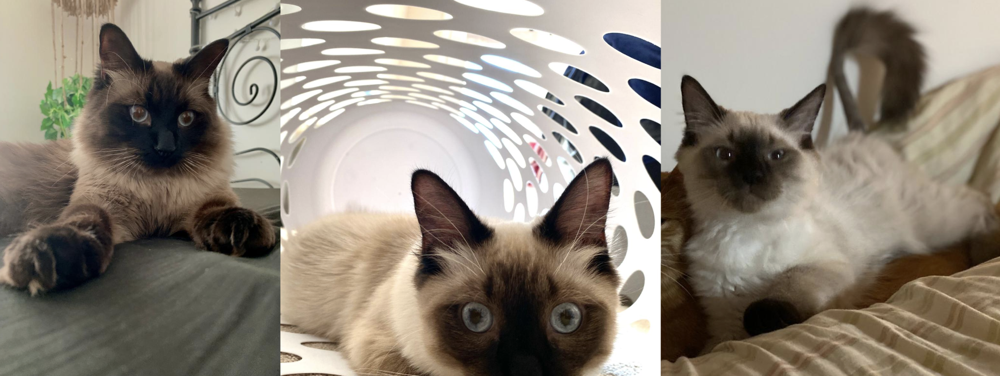
Gobi was another stray that my sister found in a junkyard on her way to work. She brought her home all dirty and smelly, and that’s how Gobi ended up with us. She never really grew properly and stayed super tiny, which somehow matches how weird she is. She’s a bit of a creepy girl and loves staring at people from random corners of the house, but when you catch her alone, she’s actually really sweet.
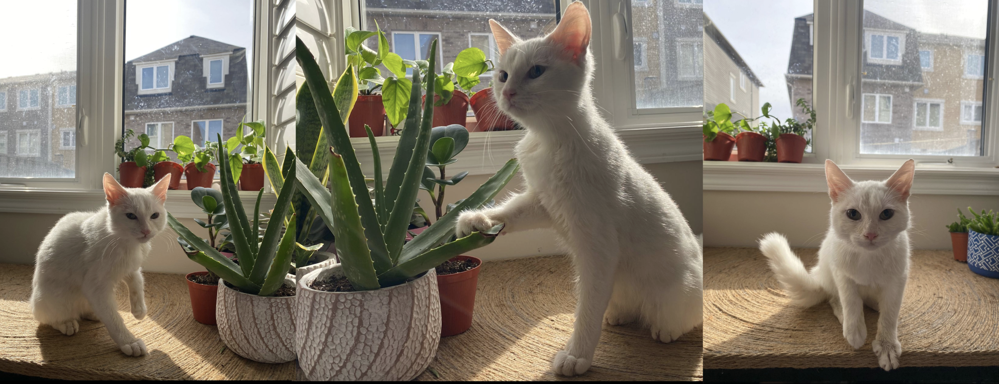
Luna is one of the smartest cats I’ve ever met. She’s technically my sister’s cat, but since she lives with the rest of us, I like to think of myself as her aunty. She loves pets, but she’s very selective about her people, so once you’re chosen, it makes you feel extra special. Somehow, every time I get sick, it’s like she knows. She always comes over to give me little headbutts and keep me company.
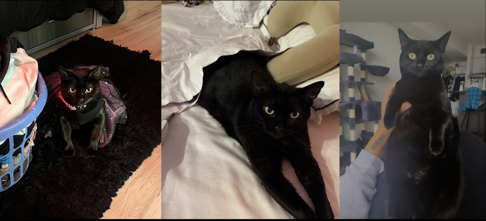
Saya is a little stinker. Half the time, it seems like there’s nothing behind those eyes except thoughts of games, toys, and snacks. She’s really just a playful kitten trapped in a grown cat’s body. She’s more of a lone wolf, but she never says no to coming by for morning biscuits.
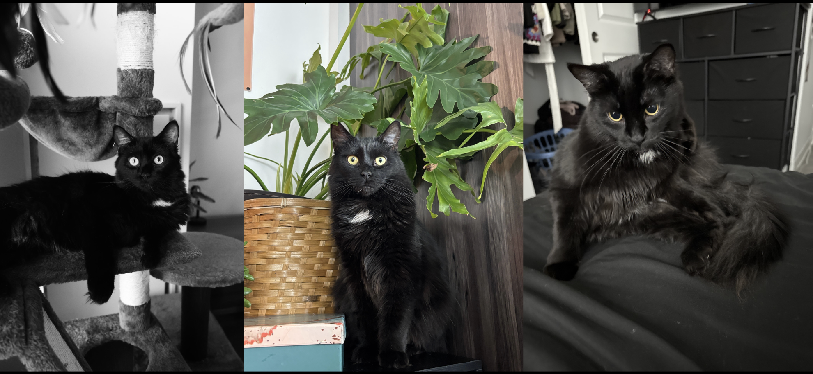
Jagga is still a bit newer to me, so we’re both still figuring each other out and building our connection. He has a little bit of sass to him and will bite every now and then, but he absolutely loves his games. He’s more of a loner and still seems to be finding his place with the rest of the group. Most of the time, you’ll catch him trailing behind the orange cats around the house, like he’s trying to be part of the big brother crew.
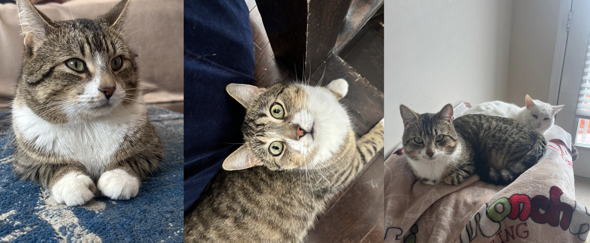
And finally, my stinky little girl. Bonnie is the family dog after many years of us not having one, and I honestly do not even know how to explain how crazy she is. She is always on level 100, and if anyone has a toy or a snack, Bonnie will be there immediately. She’s the happiest little sister and loves annoying her brothers. Since she grew up around cats, she now fully seems to think she’s one of them, which makes everything even funnier.
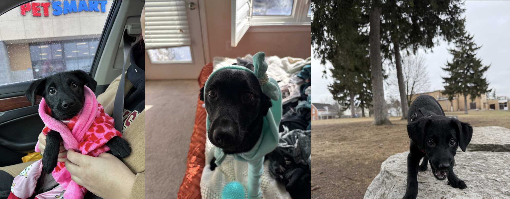
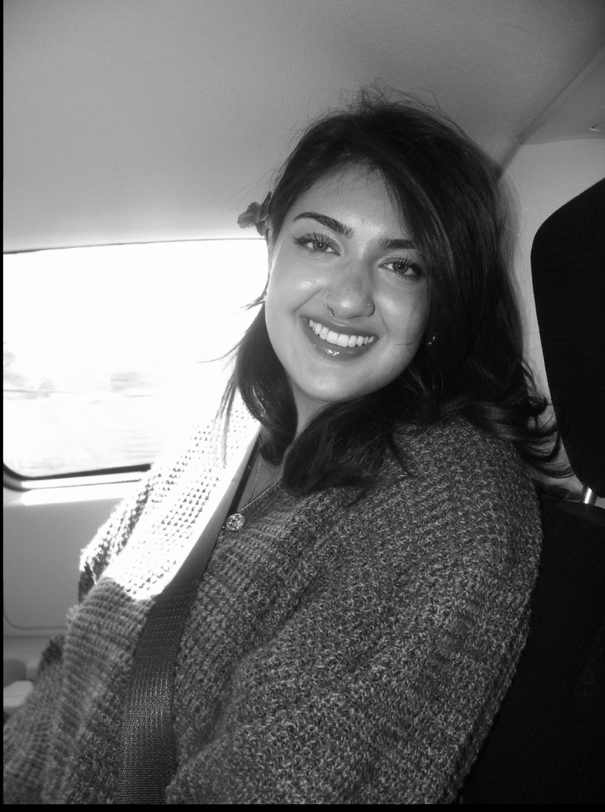
Thank you for taking the time to look through my page and learn a little more about such a special interest of mine. Animals have always meant so much to me, so it was nice being able to share a small piece of that here.
To get in touch you can reach me at: o3tahir@uwaterloo.ca